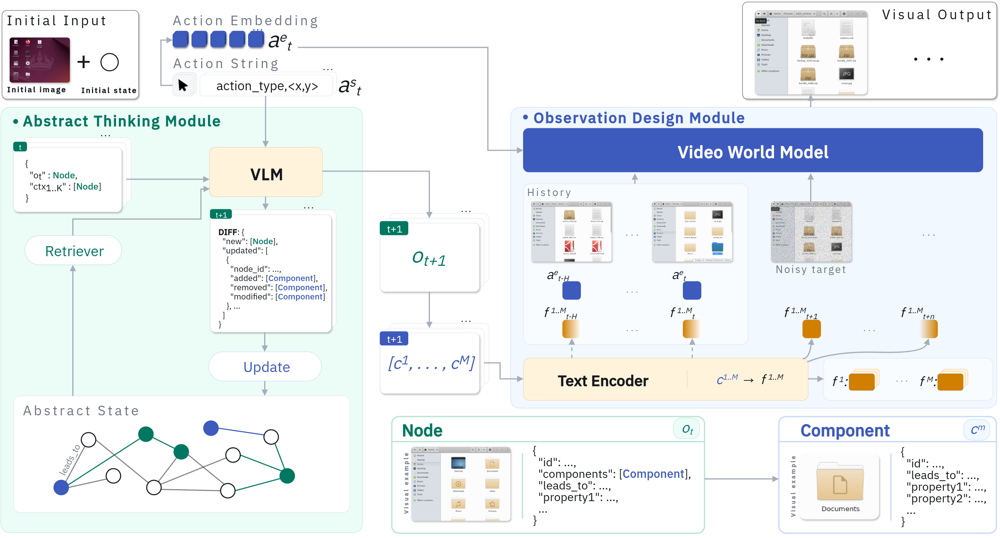
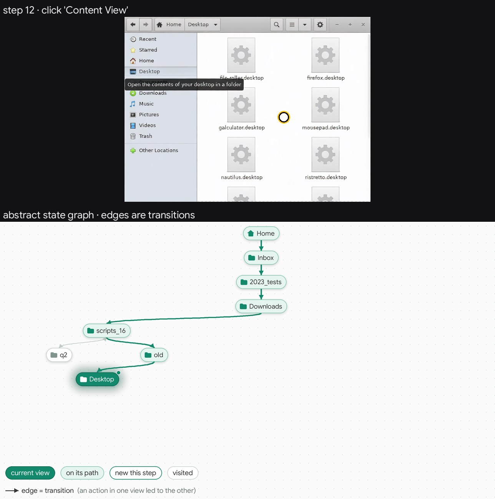
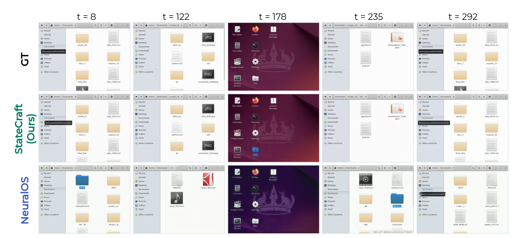
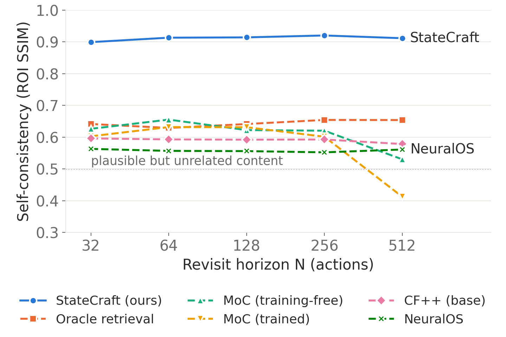
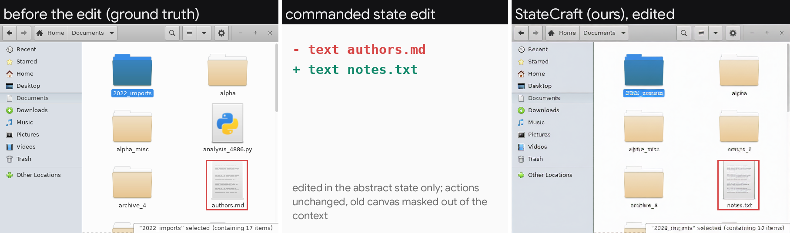
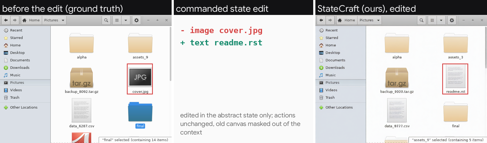
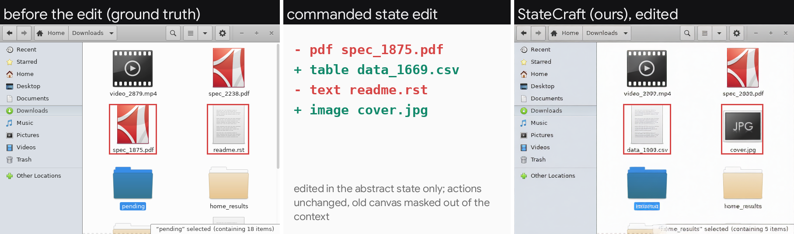
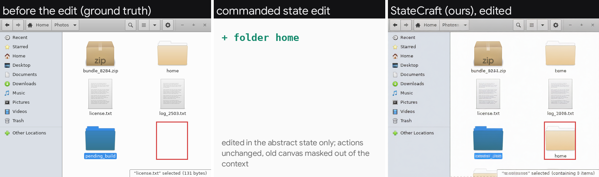
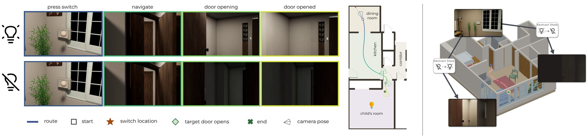

Video world models aim to simulate complex environments with realistic appearance and dynamics. Maintaining consistency over long interactions requires tracking past actions and understanding how those actions affect the environment. Video world models can only generate partial observations of the entire world at a time. Remembering past observations alone may not be sufficient in every scenario, as they may no longer reflect the world after a sequence of actions.
We therefore introduce a paradigm that decouples a persistent, updatable abstract state from the visual state. The abstract state keeps track of the entities' changes as the world evolves, and is used to condition the visual state, which represents the current view. We propose StateCraft, a novel architecture that pairs a language model with a video diffusion model to evolve the dynamic world.
We evaluate our approach on generative interfaces, which pose a substantial challenge because a single action may change parts of the state that are not currently visible. To support training and evaluation, we develop a data collection pipeline that produces informative, densely annotated trajectories at scale without human or agent supervision, together with a benchmark measuring generation quality, memory, and controllability. On this benchmark, our approach improves visual memory metrics by 0.30 (SSIM) and PSNR by up to 10 dB over the state-of-the-art baselines. We demonstrate that StateCraft maintains high self-consistency and strong generation quality over long trajectories. Because the abstract state is explicit, it can be edited directly, and generation follows edits to states never observed in the data. Finally, a proof-of-concept 3D experiment, in which actions change the illumination of an unobserved room, shows that the paradigm can also be applied to spatial environments.
A recorded run, step by step: the click, the language model's state update, and the frame the video model generates. In Videos you can open another folder: new folders are imagined, folders seen before are recalled.
An action can change parts of the world that are off screen. StateCraft keeps them in an abstract state, a graph of views and their elements updated by a language model, and renders the current view with a video world model conditioned on that state.

Drag the slider to step through a rollout and the state graph that conditions it.

Step 12
On 240 held-out trajectories of 300 actions, the abstract state improves both video backbones on every metric. Baselines keep a convincing window while the folder contents drift.
| Model | SSIM ↑ | PSNR ↑ | ifreq-SSIM ↑ | ifreq-PSNR ↑ |
|---|---|---|---|---|
| NeuralOS | 0.85 | 20.92 | 0.82 | 19.04 |
| DFoT | 0.86 | 23.27 | 0.81 | 19.45 |
| CF++ | 0.78 | 18.49 | 0.79 | 18.99 |
| StateCraft (DFoT) | 0.92 | 27.63 | 0.92 | 28.06 |
| StateCraft (CF++) | 0.95 | 28.78 | 0.95 | 28.71 |

Enter a folder, wander through others, and return after 32 to 512 actions. StateCraft's revisit matches its first visit at every horizon (about 0.9 SSIM); the baselines stay around 0.5-0.6.

The abstract state is explicit, so it can be edited directly. The video follows 81% of edits, including changes made out of view that appear when the folder is re-entered.




Not every action changes the state. A small probe on the video model's activations decides whether to call the language model at all, skipping 40.8% of calls for a 0.57 dB cost.
The pipeline run from the top of the page, with the gate on.
In simulated 3D houses, a switch lights a room the camera cannot see. Conditioned on the room's light state, the video model renders it lit or dark in houses it never saw in training.

Our collector reads the accessibility tree of the file manager and acts on real elements, recording frames, actions and state changes: three times as many visible changes as blind clicking. The released benchmark covers generation, memory and controllability.
@article{statecraft2026,
title = {StateCraft: Augmenting Video World Models with Abstract-State Reasoning},
author = {Venturoli, Lorenzo and Savov, Nedko and Wang, Xi and Pollefeys, Marc and Van Gool, Luc},
journal = {arXiv preprint arXiv:XXXX.XXXXX},
year = {2026},
}